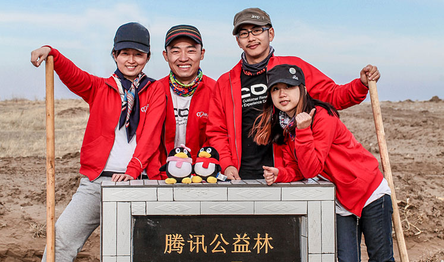

公司动态
-
- 1共沐阳光，伴腾讯远航 2014/06/24
- 数字公益：腾讯公益慈善基金会数字后的故事 2014/06/24
- 健康加油站，快乐常相伴 2014/06/24
- 关注行政助手参加儿童节有奖竞猜啦~~ 2014/06/24
- 国务院副总理马凯一行调研腾讯公司 2014/06/24
- 健康加油站，快乐常相伴 2014/06/24
- 腾讯公布2013年第四季度及全年业绩 2014/06/24
- 共沐阳光，伴腾讯远航 2014/06/24
- 数字公益：腾讯公益慈善基金会数字后的故事 2014/06/24
- 健康加油站，快乐常相伴 2014/06/24
-
- 2共沐阳光，伴腾讯远航 2014/06/24
- 数字公益：腾讯公益慈善基金会数字后的故事 2014/06/24
- 健康加油站，快乐常相伴 2014/06/24
- 关注行政助手参加儿童节有奖竞猜啦~~ 2014/06/24
- 国务院副总理马凯一行调研腾讯公司 2014/06/24
- 健康加油站，快乐常相伴 2014/06/24
- 腾讯公布2013年第四季度及全年业绩 2014/06/24
- 共沐阳光，伴腾讯远航 2014/06/24
- 数字公益：腾讯公益慈善基金会数字后的故事 2014/06/24
- 健康加油站，快乐常相伴 2014/06/24
-
- 3共沐阳光，伴腾讯远航 2014/06/24
- 数字公益：腾讯公益慈善基金会数字后的故事 2014/06/24
- 健康加油站，快乐常相伴 2014/06/24
- 关注行政助手参加儿童节有奖竞猜啦~~ 2014/06/24
- 国务院副总理马凯一行调研腾讯公司 2014/06/24
- 健康加油站，快乐常相伴 2014/06/24
- 腾讯公布2013年第四季度及全年业绩 2014/06/24
- 共沐阳光，伴腾讯远航 2014/06/24
- 数字公益：腾讯公益慈善基金会数字后的故事 2014/06/24
- 健康加油站，快乐常相伴 2014/06/24
发展历程
-
2013
09
“微信和WeChat”的合并月活跃帐户数达到2.719亿
-
2012
12
中共中央总书记、中共中央军委主席习近平考察腾讯
-
2011
01
腾讯正式推出微信
腾讯设立50亿元产业共赢基金
-
2010
11
QQ获世界知识产权组织（WIPO）“全球创意金奖”
09中共中央总书记、国家主席、中央军委主席胡锦涛同志考察腾讯
03QQ同时最高在线帐户数突破1亿
-
2009
04
腾讯 QQ 获中国驰名商标认定
腾讯设立50亿元产业共赢基金
-
2008
06
腾讯股票 （HK0700）被纳入50只香港恒生指数成份股之一
05腾讯率先为汶川地震捐款救灾并上线网络捐赠平台
03腾讯网成为2010年世博会唯一互联网高级赞助商
-
2007
06
腾讯成立中国互联网第一家公益基金会 — 腾讯公益慈善基金会
-
2006
06
腾讯被认定为“国家规划布局内的重点软件企业”
-
2004
06
腾讯成功在香港主板上市
-
2003
11
腾讯正式发布门户网站 QQ.com
-
1999
02
正式发布即时通信服务 QQ
-
1998
11
1998年11月11日，腾讯公司注册成立
管理团队
全部展开马化腾
主席马化腾，腾讯公司主要创办人之一，董事会主席、执行董事兼首席执行官，全面负责本集团的策略规划、定位和管理。1998年创立本集团前，马先生曾在中国电信服务和产品供应商深圳润迅通讯发展有限公司主管互联网传呼系统的研究开发工作, 至今积累逾二十年电信及互联网行业经验。马先生于1993年取得深圳大学理学士学位，主修计算机及应用。
刘炽平
总裁马化腾，腾讯公司主要创办人之一，董事会主席、执行董事兼首席执行官，全面负责本集团的策略规划、定位和管理。1998年创立本集团前，马先生曾在中国电信服务和产品供应商深圳润迅通讯发展有限公司主管互联网传呼系统的研究开发工作, 至今积累逾二十年电信及互联网行业经验。马先生于1993年取得深圳大学理学士学位，主修计算机及应用。
张志东
主要创办人，首席技术官马化腾，腾讯公司主要创办人之一，董事会主席、执行董事兼首席执行官，全面负责本集团的策略规划、定位和管理。1998年创立本集团前，马先生曾在中国电信服务和产品供应商深圳润迅通讯发展有限公司主管互联网传呼系统的研究开发工作, 至今积累逾二十年电信及互联网行业经验。马先生于1993年取得深圳大学理学士学位，主修计算机及应用。
许晨晔
主要创办人，首席信息官马化腾，腾讯公司主要创办人之一，董事会主席、执行董事兼首席执行官，全面负责本集团的策略规划、定位和管理。1998年创立本集团前，马先生曾在中国电信服务和产品供应商深圳润迅通讯发展有限公司主管互联网传呼系统的研究开发工作, 至今积累逾二十年电信及互联网行业经验。马先生于1993年取得深圳大学理学士学位，主修计算机及应用。
任宇昕
首席运营官，兼互动娱乐事业群总裁、移动互联网事业群总裁马化腾，腾讯公司主要创办人之一，董事会主席、执行董事兼首席执行官，全面负责本集团的策略规划、定位和管理。1998年创立本集团前，马先生曾在中国电信服务和产品供应商深圳润迅通讯发展有限公司主管互联网传呼系统的研究开发工作, 至今积累逾二十年电信及互联网行业经验。马先生于1993年取得深圳大学理学士学位，主修计算机及应用。
James
首席战略官，集团高级执行副总裁马化腾，腾讯公司主要创办人之一，董事会主席、执行董事兼首席执行官，全面负责本集团的策略规划、定位和管理。1998年创立本集团前，马先生曾在中国电信服务和产品供应商深圳润迅通讯发展有限公司主管互联网传呼系统的研究开发工作, 至今积累逾二十年电信及互联网行业经验。马先生于1993年取得深圳大学理学士学位，主修计算机及应用。
刘胜义
网络媒体事业群总裁，集团高级执行副总裁马化腾，腾讯公司主要创办人之一，董事会主席、执行董事兼首席执行官，全面负责本集团的策略规划、定位和管理。1998年创立本集团前，马先生曾在中国电信服务和产品供应商深圳润迅通讯发展有限公司主管互联网传呼系统的研究开发工作, 至今积累逾二十年电信及互联网行业经验。马先生于1993年取得深圳大学理学士学位，主修计算机及应用。
汤道生
社交网络事业群总裁，集团高级执行副总裁马化腾，腾讯公司主要创办人之一，董事会主席、执行董事兼首席执行官，全面负责本集团的策略规划、定位和管理。1998年创立本集团前，马先生曾在中国电信服务和产品供应商深圳润迅通讯发展有限公司主管互联网传呼系统的研究开发工作, 至今积累逾二十年电信及互联网行业经验。马先生于1993年取得深圳大学理学士学位，主修计算机及应用。
张小龙
微信事业群总裁，集团高级执行副总裁马化腾，腾讯公司主要创办人之一，董事会主席、执行董事兼首席执行官，全面负责本集团的策略规划、定位和管理。1998年创立本集团前，马先生曾在中国电信服务和产品供应商深圳润迅通讯发展有限公司主管互联网传呼系统的研究开发工作, 至今积累逾二十年电信及互联网行业经验。马先生于1993年取得深圳大学理学士学位，主修计算机及应用。
卢山
技术工程事业群总裁，集团高级执行副总裁马化腾，腾讯公司主要创办人之一，董事会主席、执行董事兼首席执行官，全面负责本集团的策略规划、定位和管理。1998年创立本集团前，马先生曾在中国电信服务和产品供应商深圳润迅通讯发展有限公司主管互联网传呼系统的研究开发工作, 至今积累逾二十年电信及互联网行业经验。马先生于1993年取得深圳大学理学士学位，主修计算机及应用。
吴宵光
集团高级执行副总裁马化腾，腾讯公司主要创办人之一，董事会主席、执行董事兼首席执行官，全面负责本集团的策略规划、定位和管理。1998年创立本集团前，马先生曾在中国电信服务和产品供应商深圳润迅通讯发展有限公司主管互联网传呼系统的研究开发工作, 至今积累逾二十年电信及互联网行业经验。马先生于1993年取得深圳大学理学士学位，主修计算机及应用。
网大为
集团高级执行副总裁马化腾，腾讯公司主要创办人之一，董事会主席、执行董事兼首席执行官，全面负责本集团的策略规划、定位和管理。1998年创立本集团前，马先生曾在中国电信服务和产品供应商深圳润迅通讯发展有限公司主管互联网传呼系统的研究开发工作, 至今积累逾二十年电信及互联网行业经验。马先生于1993年取得深圳大学理学士学位，主修计算机及应用。
马晓轶
集团高级副总裁马化腾，腾讯公司主要创办人之一，董事会主席、执行董事兼首席执行官，全面负责本集团的策略规划、定位和管理。1998年创立本集团前，马先生曾在中国电信服务和产品供应商深圳润迅通讯发展有限公司主管互联网传呼系统的研究开发工作, 至今积累逾二十年电信及互联网行业经验。马先生于1993年取得深圳大学理学士学位，主修计算机及应用。
罗硕瀚
首席财务官，集团高级副总裁马化腾，腾讯公司主要创办人之一，董事会主席、执行董事兼首席执行官，全面负责本集团的策略规划、定位和管理。1998年创立本集团前，马先生曾在中国电信服务和产品供应商深圳润迅通讯发展有限公司主管互联网传呼系统的研究开发工作, 至今积累逾二十年电信及互联网行业经验。马先生于1993年取得深圳大学理学士学位，主修计算机及应用。
郭凯天
集团高级执行副总裁马化腾，腾讯公司主要创办人之一，董事会主席、执行董事兼首席执行官，全面负责本集团的策略规划、定位和管理。1998年创立本集团前，马先生曾在中国电信服务和产品供应商深圳润迅通讯发展有限公司主管互联网传呼系统的研究开发工作, 至今积累逾二十年电信及互联网行业经验。马先生于1993年取得深圳大学理学士学位，主修计算机及应用。
奚丹
集团高级副总裁马化腾，腾讯公司主要创办人之一，董事会主席、执行董事兼首席执行官，全面负责本集团的策略规划、定位和管理。1998年创立本集团前，马先生曾在中国电信服务和产品供应商深圳润迅通讯发展有限公司主管互联网传呼系统的研究开发工作, 至今积累逾二十年电信及互联网行业经验。马先生于1993年取得深圳大学理学士学位，主修计算机及应用。
终身荣誉顾问
陈一丹
主要创办人，终身荣誉顾问，腾讯公益慈善基金会发起人兼荣誉理事长马化腾，腾讯公司主要创办人之一，董事会主席、执行董事兼首席执行官，全面负责本集团的策略规划、定位和管理。1998年创立本集团前，马先生曾在中国电信服务和产品供应商深圳润迅通讯发展有限公司主管互联网传呼系统的研究开发工作, 至今积累逾二十年电信及互联网行业经验。马先生于1993年取得深圳大学理学士学位，主修计算机及应用。
曾李青
主要创办人，终身荣誉顾问马化腾，腾讯公司主要创办人之一，董事会主席、执行董事兼首席执行官，全面负责本集团的策略规划、定位和管理。1998年创立本集团前，马先生曾在中国电信服务和产品供应商深圳润迅通讯发展有限公司主管互联网传呼系统的研究开发工作, 至今积累逾二十年电信及互联网行业经验。马先生于1993年取得深圳大学理学士学位，主修计算机及应用。
-

2010《中国公益人才发展现状及需求调研报告》在京发布。腾讯公益慈善基金会、南都公益、刘鸿儒基金会联合零点咨询推出本次调研报告。调研结果形成中国公益人才的基础数字模型。
-
2010《中国公益人才发展现状及需求调研报告》在京发布。腾讯公益慈善基金会、南都公益、刘鸿儒基金会联合零点咨询推出本次调研报告。调研结果形成中国公益人才的基础数字模型。
-
2010《中国公益人才发展现状及需求调研报告》在京发布。腾讯公益慈善基金会、南都公益、刘鸿儒基金会联合零点咨询推出本次调研报告。调研结果形成中国公益人才的基础数字模型。